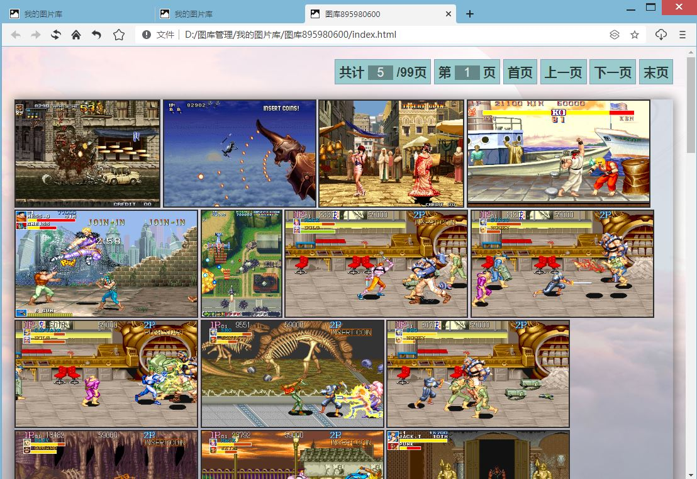
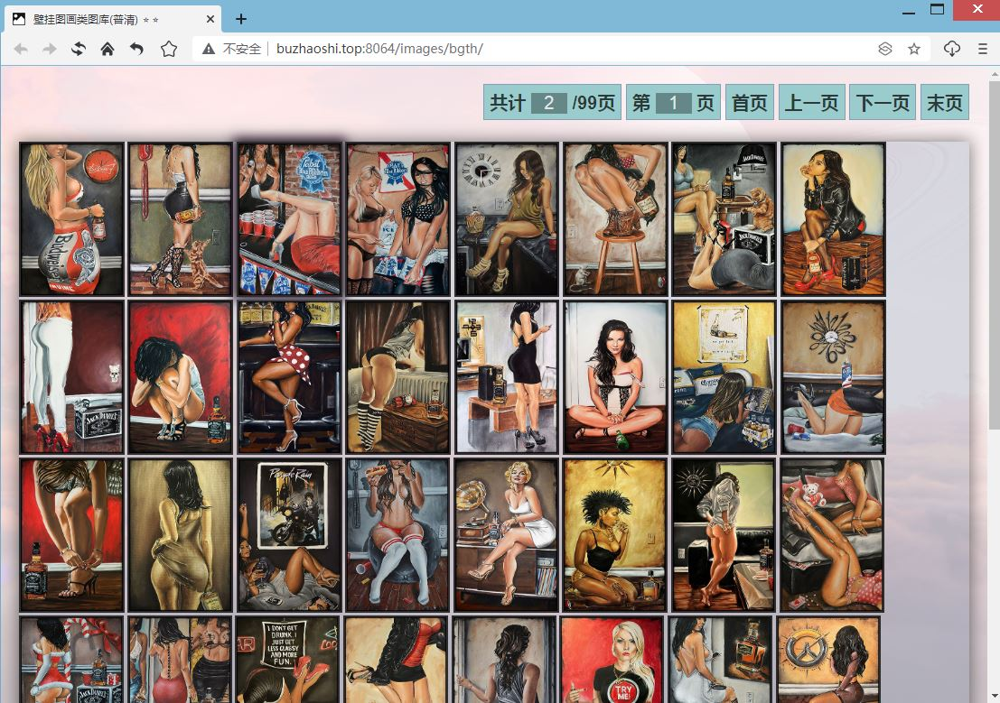
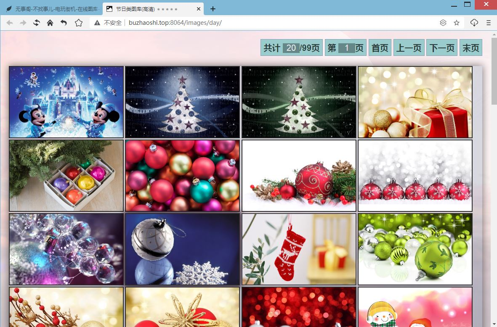
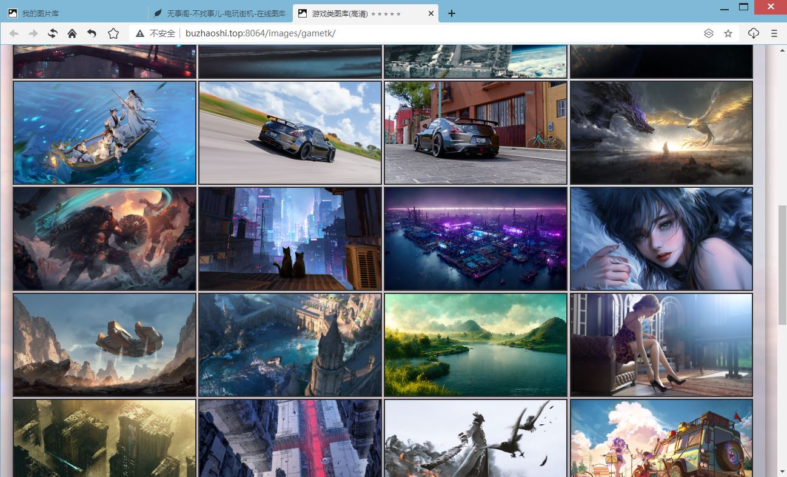
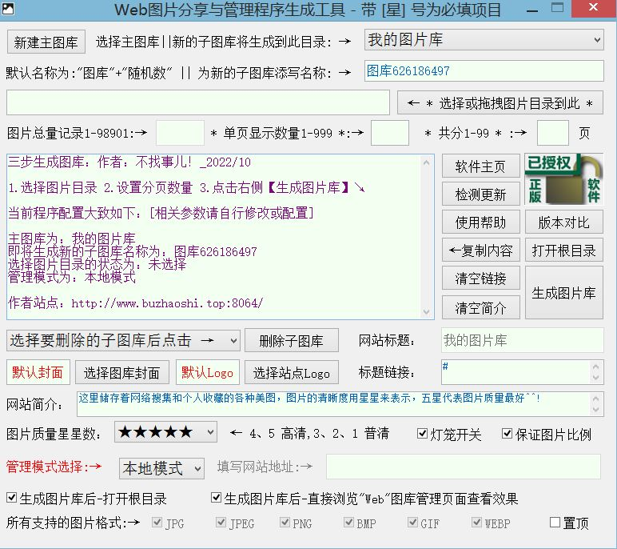

新动态：电玩街机[全新机台，对比旧版资源使用率更低，声音模拟更完善]已上线[浏览器跨平台游玩，支持电脑端、手机端、平板、电视盒子等平台设备...]支持自定义按键，支持手柄、键盘等外设输入！
站点公告：本站为非盈利性质个人站点，必然偶尔会发生无法访问的情况，介时还请多多理解，尽量第一时间恢复访问！
作者：感谢所有支持过本站的朋友们！愿天黑有灯，下雨有伞，平安幸福度一生！
无事阁原创软件_作者：不找事儿
★ 本站网址 ★ www.buzhaoshi.top ★ 或 ★ buzhaoshi.top ★
Web图片分享与管理程序生成工具-已上线
重要说明：本地模式管理图片会一次性加载完全部图片后进行分页，因为固态硬盘读取速度快，在图片不是非常多的情况下影响不会很大，但如果是机械硬盘就显得吃力，图片一多起来就会卡顿，按照下面的方法即可解决这个问题
最简单的解决方法：在本地搭建一个网页服务器（无需数据库），创建图片库时选择网络模式创建即可实现单页加载图片，打开一页加载一页，不会全部加载完成后再进行分页，而是先分好页再进行当前选择页面的加载
简介：Web图片分享与管理程序生成工具 是一款集图片的本地与网络分类管理、网络收藏、外链、分享以及跨平台(电脑、平板、手机)于一身的Web图片分享与管理程序代码的生成工具，无需数据库，最终生成以“CSS”+“JS”+“HTML”网页的形式来分享与管理本地或网络图库中的图片，只要有浏览器，就可以随时在多平台查看与下载(工具本身需在Windows系统中配置)，简约而不简单，用最简约的方式呈现出最不简单的你！
构建：图库根目录里包含一个主网页HTML文件、一个放置单图库封面的文件夹、一个放置JS脚本文件的文件夹、一个放置CSS样式的文件夹和所有建立的单图库，单图库里包含一个网页HTML文件、一个CSS样式文件、一个脚本文件和一个放置网页背景图的文件夹
说明：图库可以无限建立，单图库可以无限建立，单图库中最多支持99页，每页最高支持999张图片，单图库总数不能超过99*999=98901(可以不用这么多但不能没有这么多)，图库可以整个分享亦可单个分享，图库只能通过分享网址的方式分享
分享：
整个图库--分享根目录的网址+index.html即可
单个图库--分享单图库的网址+index.html即可
放大操作：在网页中点击相应图片即可等比放大至整个浏览器窗口观看
适用场景：（网络分享需要Web服务器支撑）
1.宝妈，记录孩子成长的瞬间，每一张都显得那么珍贵，可一张一张的看，不够过瘾
2.摄影爱好者，图片素材甚多，想找一张美图却不知从何下手，难于管理
3.图片收藏者，各种类型的图片多如细沙，可却在硬盘里吃灰，览阅不便
4.公司，可通过局域网或互联网，分享图片文档，一图多用，大家一起来看，不必每人都发，更新方便
5.外链图片，可轻松选取单张图片获取外链地址，供外链调用
6.分享照片，可轻松选取单张图片获取外链地址，可通过局域网或互联网分享喜爱的照片给朋友们
7.分享狂人，可通过局域网或互联网分享单个图库或整个图库，批量看帅哥，看美女，还有看风景的不二利器
8.本地管理，只要硬盘有容量，那就来者不拒，无需网络，更多适用场景请自行探索......
不适用场景：商业范围，有泄露图片地址与被盗链的风险，固不推荐商用
声明：作者对商用引起的后果，不承担任何责任，特此声明
程序演示DEMO：Web图片分享与管理程序生成工具
资源获取Web图片分享与管理程序生成工具 webshareimages.zip
作者：不找事儿 2022/10/11
重要说明：本地模式管理图片会一次性加载完全部图片后进行分页，因为固态硬盘读取速度快，在图片不是非常多的情况下影响不会很大，但如果是机械硬盘就显得吃力，图片一多起来就会卡顿，按照下面的方法即可解决这个问题
最简单的解决方法：在本地搭建一个网页服务器（无需数据库），创建图片库时选择网络模式创建即可实现单页加载图片，打开一页加载一页，不会全部加载完成后再进行分页，而是先分好页再进行当前选择页面的加载
程序预览图：




软件截图：

★ 本站网址 ★ www.buzhaoshi.top ★ 或 ★ buzhaoshi.top ★